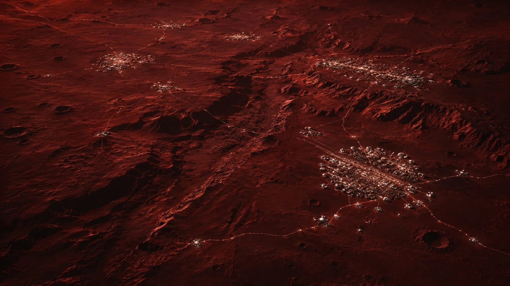
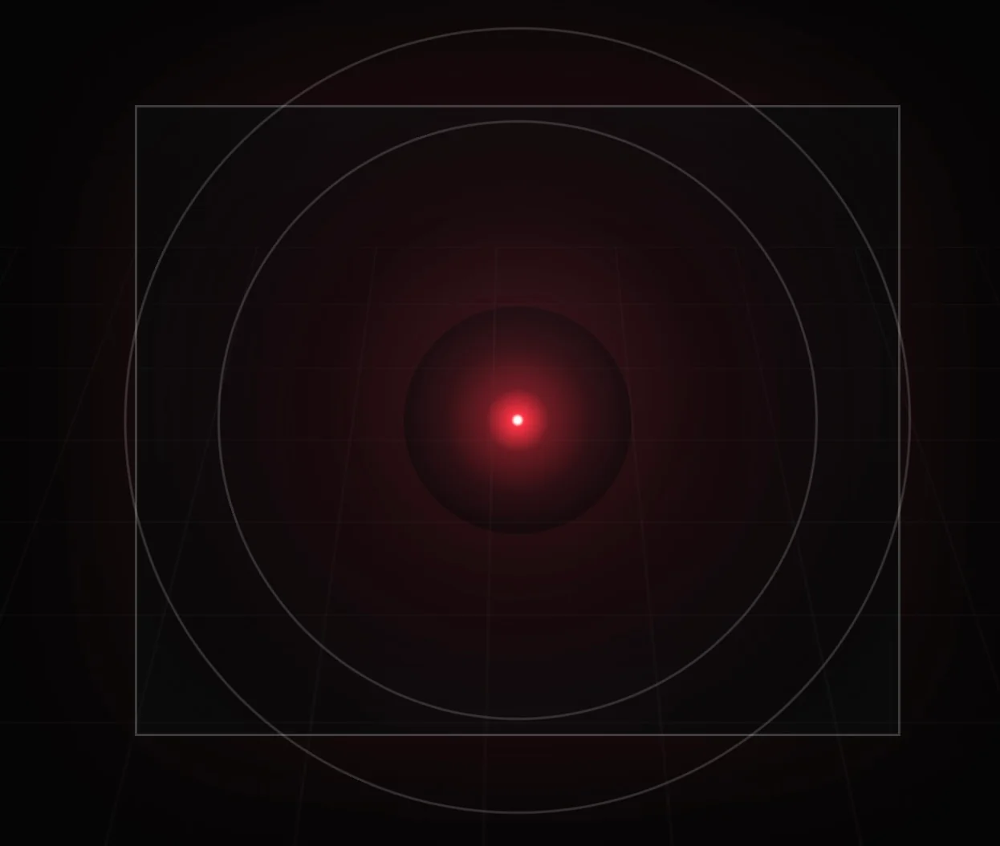
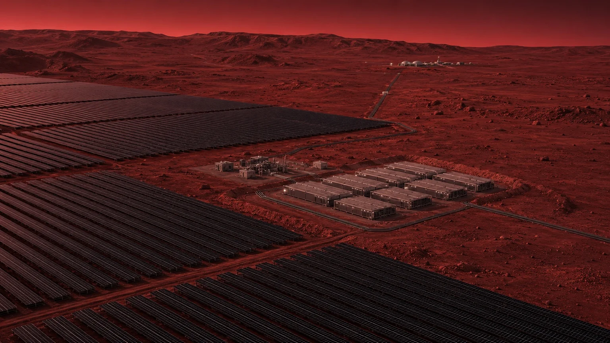
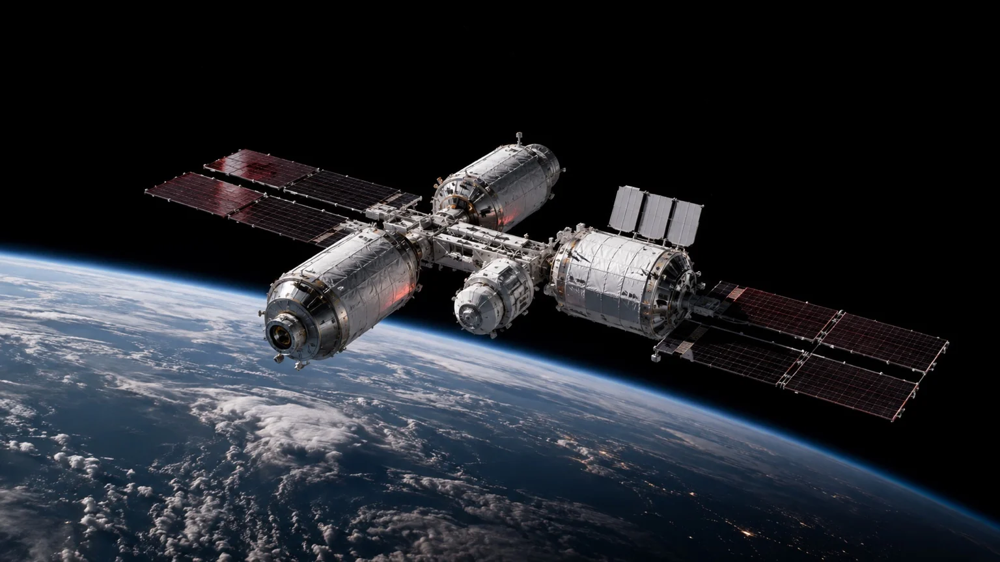
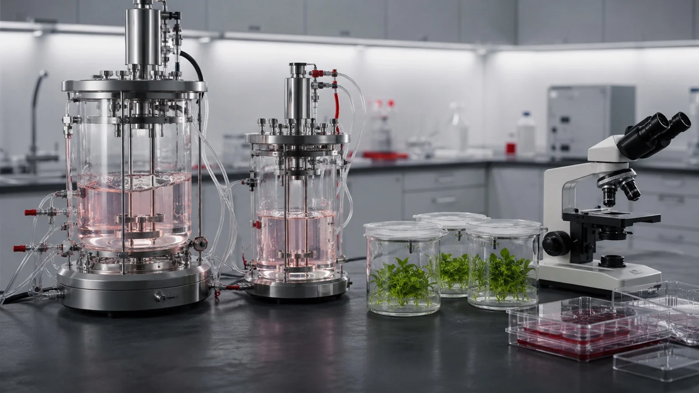
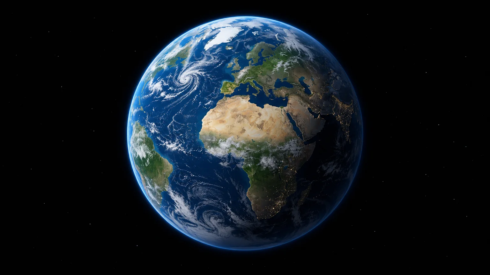
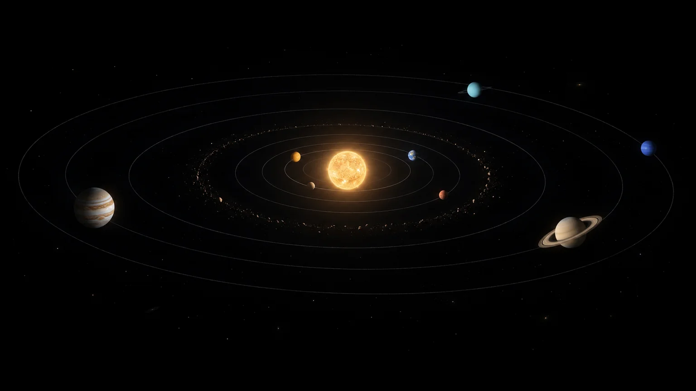
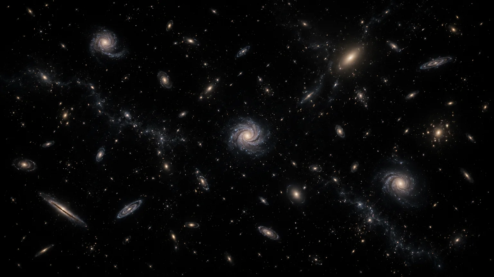

01
Civilisation
Designing societies that endure.
Researching governance, institutions, economics, education and long-term decision-making to help humanity build resilient and flourishing civilisations.

A civilisation initiative dedicated to studying the knowledge, systems, institutions, technologies and ideas that may help humanity survive, cooperate and build across generations as a multi-planetary species.
Designing societies that endure.
Researching governance, institutions, economics, education and long-term decision-making to help humanity build resilient and flourishing civilisations.

Intelligence that amplifies humanity.
Exploring how AI can accelerate scientific discovery, engineering, education, governance and the responsible development of future civilisations.

Powering the future of civilisation.
Exploring advanced energy production, storage, distribution and resilience to support sustainable societies on Earth and beyond.

Connecting worlds beyond Earth.
Developing ideas for spaceports, orbital habitats, transportation networks, human reproduction and birth in space, asteroid resources, robotics and the infrastructure required for a sustainable interplanetary civilisation.

The biological foundations of civilisation.
Exploring genetics, synthetic biology, cellular engineering, medicine, longevity, food systems and space biology to help sustain human life and the living systems on which it depends— on Earth and beyond.

Understanding the human experience.
Exploring consciousness, psychology, creativity, ethics and meaning—because humanity’s future depends not only on technology, but also on the people who create and use it.
Beginning on Earth. Looking beyond the limits of one world, one star and one galaxy.
Building civilisations that endure.
Protecting life and building the foundations of a shared future.

Extending humanity’s presence.
Exploring the habitats and systems that could sustain civilisation across the Solar System.

Imagining connected civilisations.
A distant horizon of knowledge and cooperation between worlds around other stars.
Networks of civilisations.
The long-term dream of creating or joining a network of civilisations between galaxies.

Conceptual illustrations; scales and distances are compressed. The later horizons express a long-term aspiration.